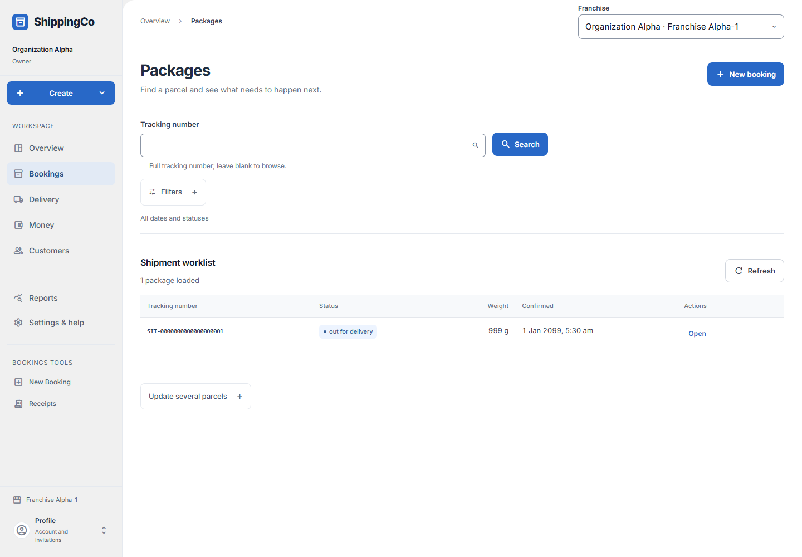
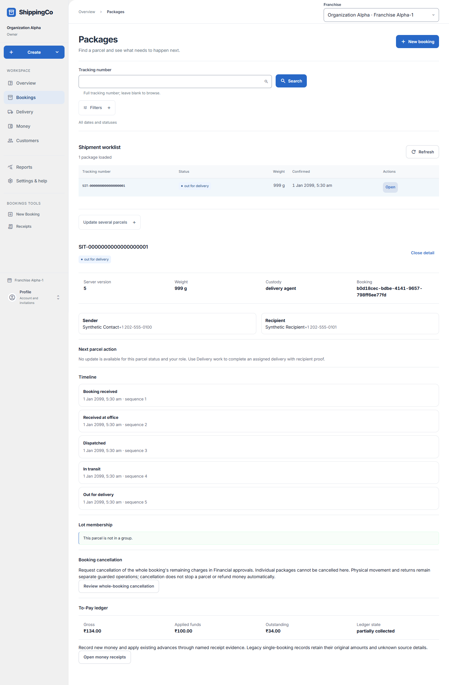

Packages
Find parcels and record what has really happened to them.

Before you start
Create a booking first. Use real record references. A UUID is the long, 36-character ID of a saved record; it is not the tracking number.
Use the list and the selected parcel
- Open Bookings to reach the Packages list. Check the branch first. Enter a whole Tracking number and choose Search, or leave it blank to browse. Open Filters for status, routing destination and booking dates; Apply filters uses those choices.
- The selected parcel shows its tracking number, delivery status, weight, custody and booking reference. Read the Timeline to see the sequence of saved events. Open the relevant work area if you need the full booking or payment evidence.
- For Booked parcels, check in using the real location and evidence references. For Checked in parcels, dispatch using a finalized manifest and evidence. A transit action uses the route reference and evidence. Only use the next action offered for the current state.
- To start delivery, select an active eligible Assigned delivery agent and supply the Handover evidence reference. Assign and send challenge starts the recipient-proof process; it does not mark the parcel delivered.
- For an unsuccessful attempt, enter the active attempt reference and evidence, then choose the true failure reason. If Start final delivery attempt is offered, select the agent and handover evidence again. The screen supports at most two physical delivery attempts.
- Open Update several parcels for bulk check-in or dispatch. Choose only the eligible parcels shown in the loaded list, enter the shared supporting references and submit. Read each result; failed items remain selected for review.
- Lot membership shows the saved group name/code. Remove from lot changes group membership only. The To-Pay ledger shows gross charges, applied funds and outstanding money; use Money receipts for recording or applying payments.
Quick steps
- Open Packages. Search by the full tracking number, or leave it blank to browse.
- Use Filters if needed. Select Search or Apply filters.
- Select Open for a parcel. Check its sender, receiver, status, timeline and lot.
- Use the next action offered for your role. Enter its supporting references, then submit.
- For several parcels, open Update several parcels. Choose the action and references, select eligible parcels and review the result for each one.
Fields on this screen
- Tracking number: Optional search. Enter the whole tracking number.
- Parcel status: Optional filter for the stage of delivery.
- Destination city / routing key: Optional rate-card destination, such as MUMBAI. Not a PIN code.
- Booked from / Booked through (Asia/Kolkata): Optional first and last booking dates. End must not be before start.
- Evidence reference (UUID): Required for a parcel action. ID of the real supporting record.
- Location reference (UUID): Required when checking in a booked parcel.
- Finalized manifest ID (UUID): Required when dispatching a checked-in parcel. Use the final dispatch list.
- Route ID (UUID): Required when recording transit.
- Active attempt ID (UUID): Required when recording a failed delivery attempt.
- Failure reason: Choose the actual reason: customer unavailable, customer requests pickup, address issue, refusal, payment not collected or operational issue.
- Approval reference (UUID) / Return plan reference (UUID): Both required for a return-to-origin action.
- Bulk action: Check in booked parcels, or dispatch checked-in parcels. Only eligible loaded parcels can be selected.
- Assigned delivery agent: Choose an eligible active agent when starting delivery.
- Handover evidence reference (UUID): Required to assign delivery and send the recipient challenge.
What happens next
The saved action updates the parcel and its history. Failed bulk updates stay selected. Delivery completion still needs recipient proof.
If you get stuck
- No parcels: clear filters, check the branch, or create a booking.
- No next action: your role or the parcel’s current stage does not allow it.
- Do not invent a UUID to unblock a form. Ask the responsible team for the actual record.
- Cancellation of charges is a whole-booking request in Financial approvals. It does not stop movement or refund money by itself.
Selected package and its history

About this guide
Checked against the current app source on 1 November 2026. Buttons depend on your access and the current record. This guide does not give extra access.